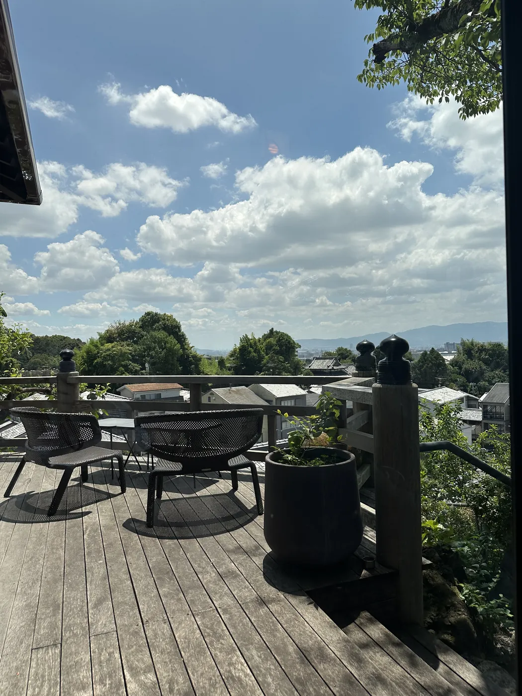

Minecraft
首字母大写，留下玩了很久的游戏身份。
PROFILE / LIN ZHENGHAO
与其用几句标准答案概括自己，不如留下名字的来历、反复喜欢的东西，以及真正到过的地方。
THE NAME
一个名字里，混进了 Minecraft、瑞士卷，还有一点将错就错。
首字母大写的 MC，
也是抹茶味的 Matcha。
首字母大写，留下玩了很久的游戏身份。
巧克力味与抹茶味，童年最喜欢的组合。

肉贝来自朋友三岁妹妹的一次误称；牛奶哥则来自小学课堂里总能拿出来的牛奶盒。玩笑用久了，也就成了名字。
TEMPERAMENT
“尽管自认为做事马马虎虎、常常只有三分热度，还是会被贴上温柔细腻的标签。不是很明白，但姑且收下。”
RECURRING FAVORITES
喜好会变化，但总有几样东西反复出现，久到足以成为个人识别色。
安静、略旧，又不至于沉闷。
想到城市时，最先出现的画面。
玩了很久，也还会继续玩的世界。
Asian Kung-fu Generation，日本摇滚。
GO FARTHER
并不擅长运动，却喜欢旅行。陌生的街道比计划表更容易让人记住一座城市。

22 CITIES & PLACES
CONTACT
点击对应按钮即可复制，不会跳离页面。